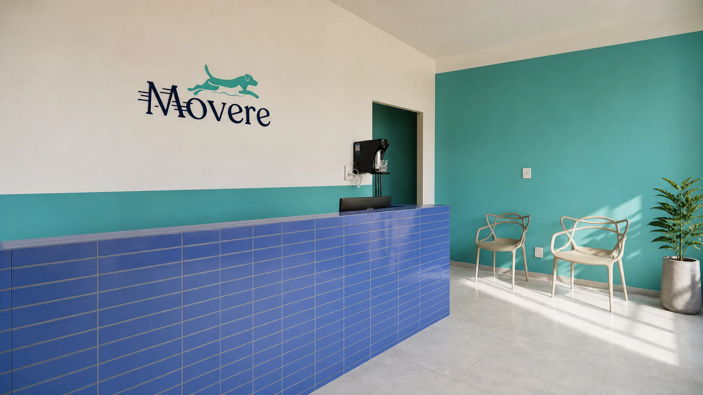
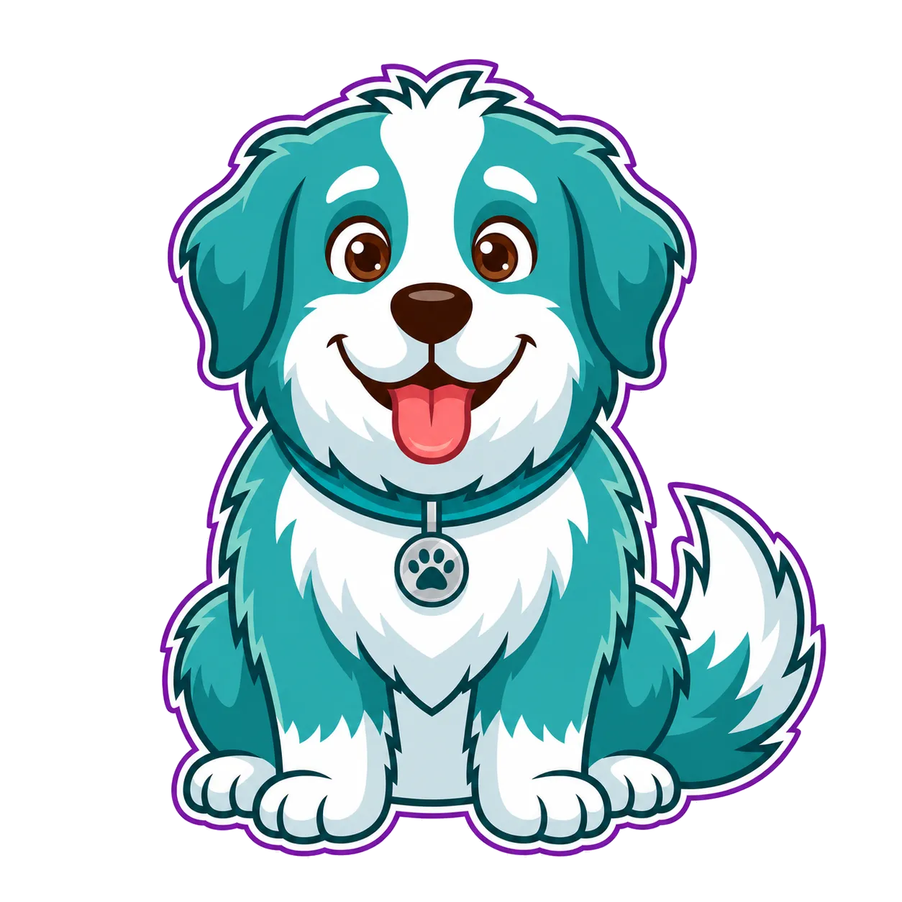

Avaliação funcional
Exame de marcha, amplitude de movimento, força e dor para entender exatamente o que o paciente precisa antes de iniciar qualquer tratamento.

Fisiatria & reabilitação animal — Goiânia, GO
A Movere acompanha cães e gatos em recuperação com avaliação funcional detalhada e protocolos de fisioterapia pensados para devolver mobilidade, força e qualidade de vida — um movimento de cada vez.

Bem-vindo à Movere!
Sobre a Movere
A Movere é uma clínica de fisiatria e reabilitação animal em Goiânia, fundada pela Dra. Fátima (FisioVet), dedicada a cães e gatos que precisam recuperar função, força e conforto após lesões, cirurgias ortopédicas ou neurológicas, ou diante de condições degenerativas e do envelhecimento.
Atuando desde 2017 com fisioterapia veterinária, nossa equipe constrói planos de reabilitação sob medida — com metas claras, revisão contínua e comunicação direta com o tutor e com o médico veterinário responsável pelo caso.
O que fazemos
Exame de marcha, amplitude de movimento, força e dor para entender exatamente o que o paciente precisa antes de iniciar qualquer tratamento.
Sessões com técnicas manuais, laserterapia e exercícios direcionados a ganho de mobilidade, força muscular e controle da dor.
Acompanhamento estruturado no pós-operatório e em condições ortopédicas, com protocolos progressivos e critérios claros de evolução.
Protocolos específicos para pacientes com lesões na coluna ou condições neurológicas que afetam o movimento.
Agendamento Online
Visualize nossa disponibilidade em tempo real e agende sua consulta automaticamente sincronizada com nossa agenda.
Se preferir um horário que não esteja listado ou tiver uma urgência, entre em contato diretamente pelos canais abaixo:
Onde estamos